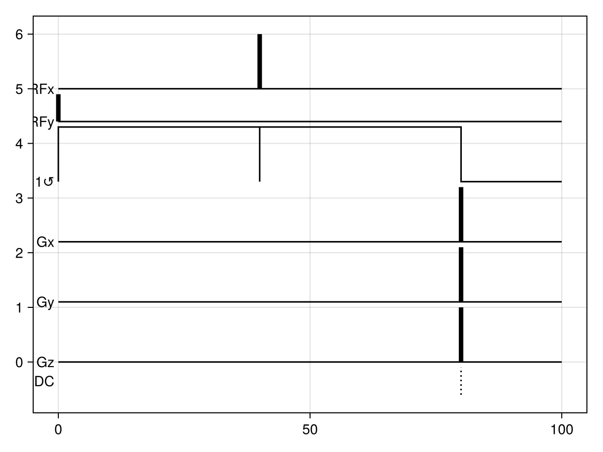
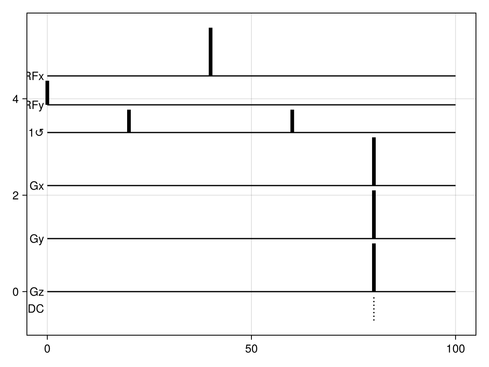

MR sequences
Built-in MR sequences
Diffusion-weighted MRI
A pulsed-gradient spin-echo can be created using dwi
sequence = dwi(TR=100., bval=3.)
sequence = dwi(TR=100., bval=3., gradient_duration=0.)
Custom MR sequences
In MCMRSimulator.jl an MR Sequence describes the RF pulses and gradients applied by the MRI scanner.
This sequence contains of:
- RF pulses, which can be instantaneous (
InstantRFPulse) or be described more realistically as RF amplitude/phase profiles ([RFPulse]) - Gradients. Like RF pulses they can be approximated as instanteneous (
InstantGradient) or have a finite duration (MRGradients) - Readouts (
Readout). These are always instanteneous as realistic modelling of an actual MRI readout would require modelling the whole brain and receiver coil configuration, which is far beyond the scope of this simulator.
Each of these sequence components will play identically every repetition time (TR) of the sequence.
Defining the MR gradients
The MRI scanner gradients cause the spins to precess at different rates in different part of the tissue. This encodes the spin location into the spin orientation and can hence be used to measure the movement of spins (e.g., in diffusion-weighted MRI). Crusher gradients are also commonly used to get rid of unwanted signal contributions due to imperfect RF pulses.
The gradient profile over time can be modeled as a MRGradients object. The off-resonance field at a specific time (or integrated over a timespan) and position can be computed using gradient.